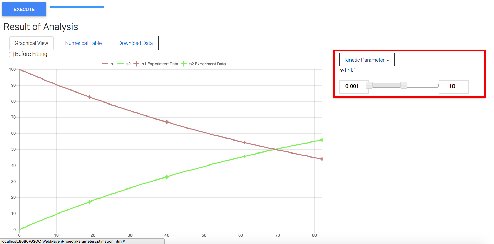

Change upper and lower bound value to execute parameter estimation for each model's parameter
You can change upper and lower bound to execute parameter estimation for each model's parameter. On the right of canvas in "Graphical View" there are 2 types of parameters, "Kinetic Parameter" which includes "Local Parameters" and "Global Parameters". You can press the tab you want to change the parameter value. Using slider or changing the value in text box, you can change upper and lower bound of model's parameter to search for.
|

|
| Fig 1 : Setting form to change upper and lower bound to execute parameter estimation for each model's parameter(red box) and execute simulation.
|